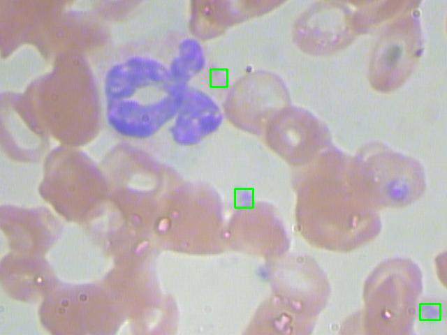
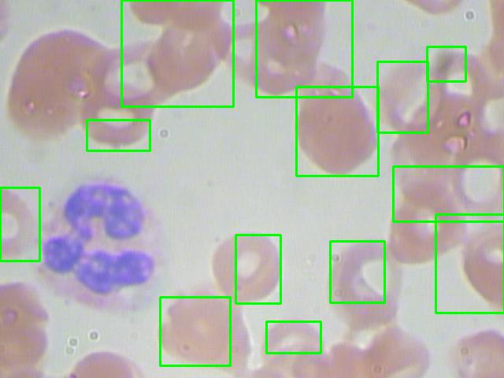
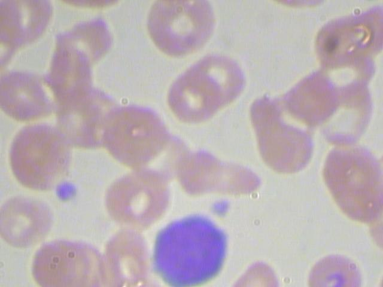

個人練習，以SVM作為這個題目（數血液細胞個數）的baseline。
主題：
計算一張血塗片影像中出現的血小板(Platelet)、紅血球(RBC)和白血球(WBC)的個數。
假設：
玻片的製作、細胞染色和資料標註都符合標準：
- 染劑將細胞質和血紅素等染成紅色；細胞核以及白血球的嗜鹼性顆粒染成藍紫色
- 位置一半落於邊緣或遮蔽達一半的細胞，不列計算
如此待處理的問題是：
- 不同顯微鏡下的影像都有一些色差
- 血球顆粒沒有一定的大小
- 血球可能彼此距離很近，看似相連
實驗限制：
- 資料筆數不多，尤其我又刪掉一些圖片…
因為我查到血液中大約有 40%～50%是紅血球，
但是有些圖片我看起來有紅血球、但標籤卻完全沒有紅血球，
所以我屏除這些紅血球標籤少於5顆的圖片。 - 白血球可再細分種類，大略分為五類[1]，
此資料集無細分白血球。
資料集
檔案來源[2]
我自行剔除少數圖片、切割資料集(80%-10%-10%比例)之後，
得到的原始統計分佈如下，

- training dataset擁有極多數的紅血球樣本…
不過想要平均取樣實在有難度，
因為一張影像當中的紅血球的個數變異不小。
資料增量方面，我只用水平翻轉、垂直翻轉圖片的方式做。 - 有些紅血球的陰影色彩與白血球的顏色相近
方法：
偵測分為2階段，
階段一是從顏色和圓形輪廓來選取可能有血球的畫面，
借助watershed[3]演算法來分割擠在一起的血球，
階段二是將選取的畫面給SVM分類器過目，
SVM[4]分類器根據HOG[5]提取的影像特徵，
判斷該區塊是否存在目標細胞。
SVM分類器以正確截圖的圖片來做訓練。
結果:
分類
Category Macro avg F1-score Platelets 0.96 RBC 0.99 WBC 0.99 偵測
使用 VOC-style Average Precision算法[6]。Category AP IoU threshold Platelets 34.32% 0.1 RBC 58.64% 0.1 WBC 91.43% 0.5 
偵測錯誤情況：
a. 誤認白血球的細胞質為血小板，這是單純用色板過濾藍紫色區域造成的缺失，
如果能再將周圍的像素也一起評估，分類器才可能看出這是白血球
b. 未能將擠在一起的紅血球分辨清楚， 這是受限於我餵給watershed演算法的圖未能淨化成粒粒分明的圓點...但我也盡力了
c. 未帶有核分裂特徵的白血球，不容易被分類器辨識， 猜測是因為其訓練資料少才導致
除錯心得：
skimage/feature/_hog.py, Line 272: ValueError: negative dimensions are not allowed
原來我誤會參數的定義了，
HOG為了能對光照變化和陰影獲得更好的效果，
圖片會切區間(block)，區間內再細分格子細胞(cell)，
輸入影像需要配合作resize，或是動態設定pixel_per_cell [7]，
為了避免出錯，簡單設定：單一側的image_size = 單一側的pixels_per_cell * 單一側的cells_per_block
這樣訓練的SVM分類器果然很弱，
畢竟它只看過截圖截得好好的訓練資料；
故意幾張餵細胞的部份截圖，還真的分類錯了。
我花費比較多心力在第一階段的畫面選準一點。一開始我是使用sliding window來取ROI給分類器的，
超級沒效率，而且對於偵測血小板簡直是海底撈針一樣打不著，
才換成用顏色篩選要截圖的區域。紅血球有可能擠成一團，
參考網路作法用watershed演算法，
佩服想出這演算法的大神 👏
只是watershed前提需要一個無雜質的背景，
轉成灰階檔、濾雜質這步驟就可以來來回回試函數(膨脹、侵蝕…)調整好久…[8]
我還嘗試過用Sobel取輪廓 → 距離轉換 → watershed，
不過roi格子還是取得很糟、而且超細碎。
我一度納悶，
我得到的白血球PR curve是水平線，
但為何 AP只有91.43%？
原來是因為得到的 recall 最高只有 0.91，
模型不能偵測出所有的 ground truth。
應該可以再嘗試負樣本的資料增量，
例如在正樣本的周圍取樣、作為負樣本，
還有餵給watershed的distance閥值也可以嘗試再調整，
大概知道這種做法的痛點了，
因為我想把握時間學習deep learning了，
所以到此止住。
參考資料：
[1] 血球細胞種類 link
[2] 血球細胞資料集 link
[3] Watershed segmentation web link
Watershed segmentation youtube link
[4] SVM演算法的 dual link 1 link 2
[5] HOG演算法 link
[6] VOC-style mAP tool link
[7] 依輸入圖檔大小，動態改變HOG函式的pixel_per_cell參數 link
[8] 框選紅血球的區域 link